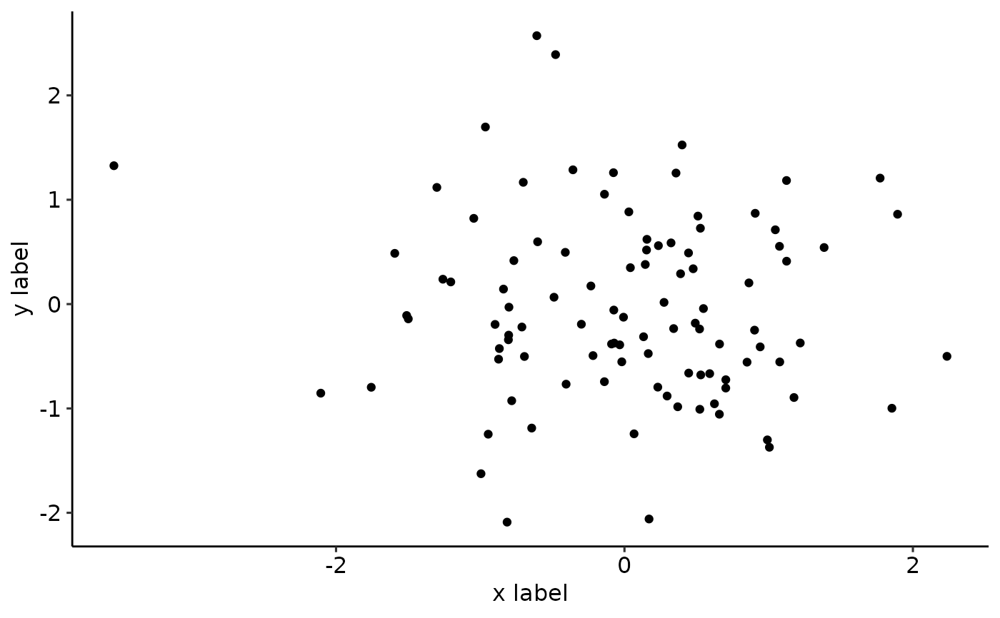

basic_plot.RdThis function creates a basic plot with the help of ggplot.
basic_plot(
df,
x,
y,
color,
xlab_setting,
ylab_setting,
ggplot_settings = ggplot_basic_settings(),
legend_position = "none",
scale_y = NULL
)A data frame containing the data to be plotted.
A string specifying the column name to be used as the x-axis variable.
A string specifying the column name to be used as the y-axis variable.
A string specifying the column name to be used as the fill variable.
ggplot labels settings for x axes.
ggplot labels settings for y axes.
Additional settings for the ggplot.
A string specifying the position of the legend.
Optional ggplot2 scale function to modify the y axis.
A ggplot plot.
df <- data.frame(x_var = rnorm(100),
y_var = rnorm(100),
color_var = sample(c("Red", "Blue"),
100,
replace = TRUE))
xlab_setting <- ggplot2::xlab("x label")
ylab_setting <- ggplot2::ylab("y label")
ggplot_instellingen <- ggplot2::geom_point()
scale_y <- ggplot2::scale_y_continuous()
basic_plot(df, "x_var", "y_var", "color_var", xlab_setting,
ylab_setting, ggplot_instellingen, "none", scale_y)
